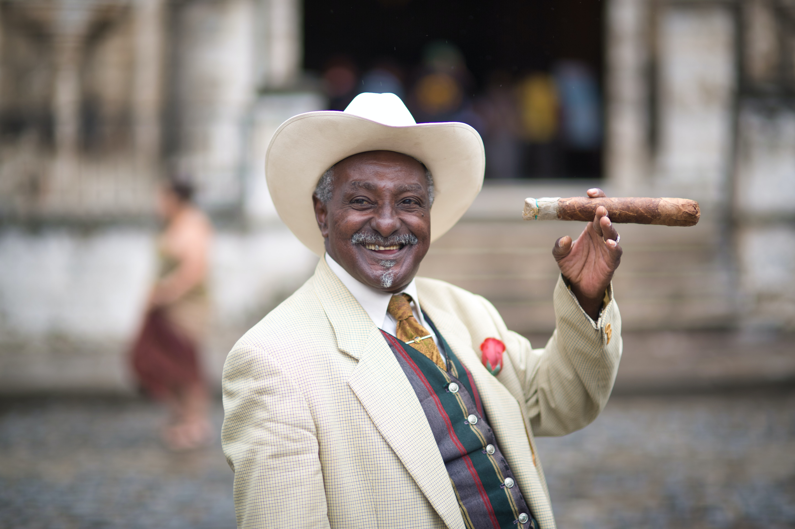

Think like a man of action and act like man of thought.
Courage is very important. Like a muscle, it is strengthened by use.
Life is the art of drawing sufficient conclusions from insufficient premises.
By doubting we come at the truth.
A man that hath no virtue in himself, ever envieth virtue in others.
When money speaks, the truth keeps silent.
Better the last smile than the first laughter.

In the morning of life, work; in the midday, give counsel; in the evening, pray.
Painless poverty is better than embittered wealth.
A poet is the painter of the soul.
Error is the discipline through which we advance.
Faith without deeds is useless.
Weak things united become strong.
We give advice, but we cannot give conduct.
Nature never deceives us; it is always we who deceive ourselves.
Forgiveness is better than revenge.
We never know the worth of water till the well is dry.
Pain past is pleasure.